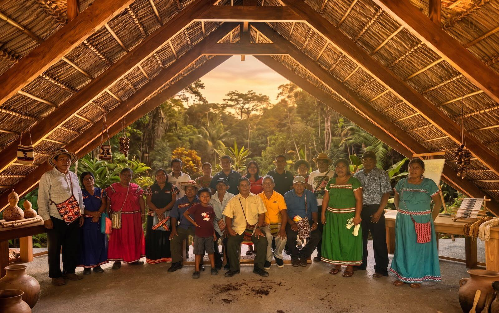

Sabiduría ancestral transmitida por los guardianes de esta tierra — sostenida por la energía grupal bajo la presencia vigilante del jaguar.

Trabajamos con los mismos elementos sagrados que nuestro espacio de sanación individual, pero aquí el foco está en la energía grupal. Nos elevamos mutuamente al honrar nuestras historias personales y compartir los hilos de nuestras vidas. El árbol sagrado se erige en el corazón del círculo; el camino de la serpiente nos enseña a soltar lo que ya no sirve; el fuego y el espíritu indómito de Osa sostienen cada paso.
Nuestros días se tejen a partir de las prácticas que siguen — sostenidas por la energía del grupo, con la finca misma como co-facilitadora.
Por favor comprende que el orden de los componentes individuales depende de mis decisiones personales durante el proceso, con el fin de capturar la magia del momento y honrar la interacción constante con los espíritus de los ancestros y de la naturaleza.
Sentarse en silencio para devolver el cuerpo y la mente al aliento de la selva.
Prácticas guiadas para escuchar los linajes que caminan junto a cada uno de nosotros.
Trabajo energético con imposición de manos, dado y recibido dentro del grupo.
Tambores, cuencos tibetanos y la voz de la selva — un baño sonoro que disuelve la frontera entre el yo y lo salvaje.
Movimiento suave guiado por la respiración, adaptado al grupo cada día.
Formas lentas y enraizadas para hacer circular el chi y alinearte con los elementos que te rodean.
Caminatas lentas y atentas por la selva viva de la Península de Osa.
Aprender los nombres, usos y espíritus de las plantas que crecen en la finca.
Rituales elementales realizados en círculo — para arraigar, liberar, renovar.
Invocación de los guardianes de este lugar — el jaguar, la serpiente, la lapa.
Un espejo intuitivo que ayuda a nombrar lo que ya se mueve dentro de ti.
Comidas nutritivas y de temporada, cocinadas con amor desde el huerto y la tierra.
Cada plato se adapta a tu cuerpo, tus alergias y tu forma de comer.
Caminar por la selva después del anochecer — dejando que la oscuridad se convierta en maestra.
Un ritual de corazón abierto con cacao sagrado para suavizar y conectar el círculo.
Encuentros con los árboles ancianos y los seres vegetales que sostienen esta tierra.
Máximo 8 huéspedes. Escríbenos para reservar tu lugar.
hola@tierrasantalodge.com